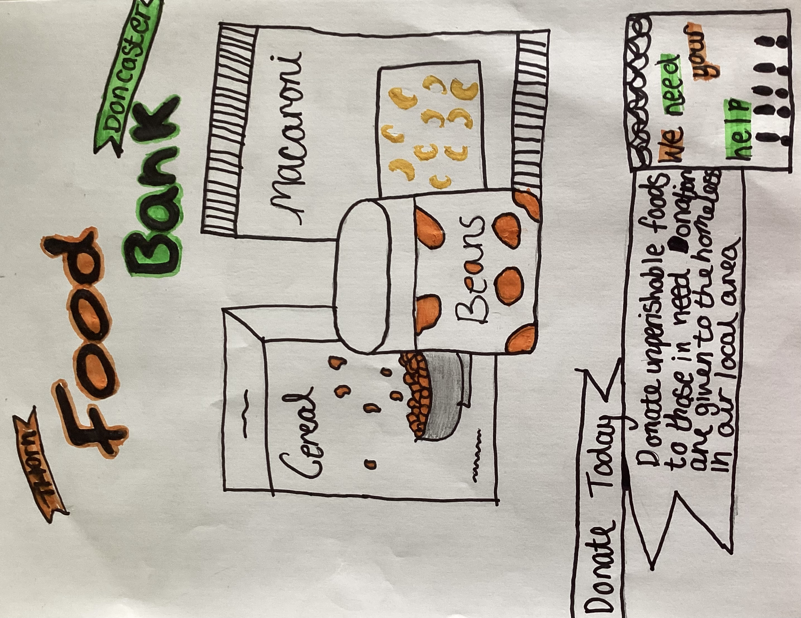
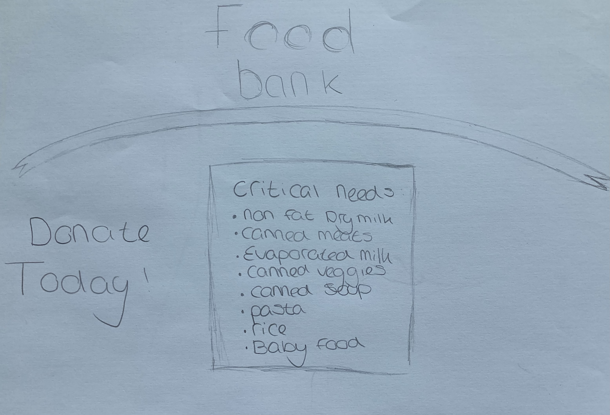
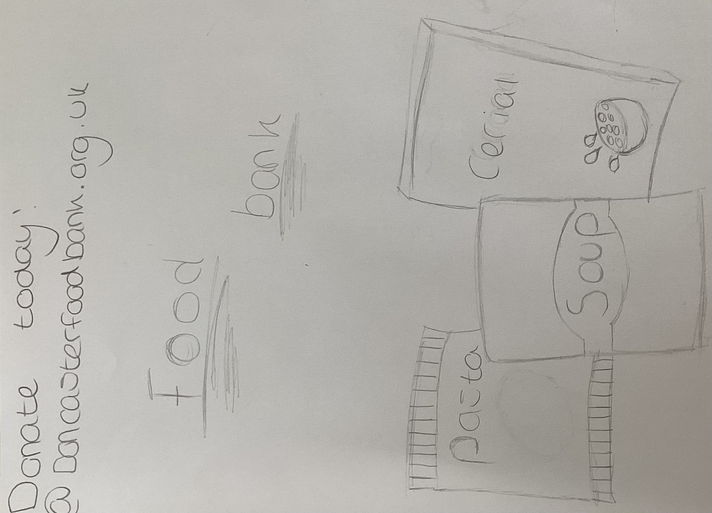
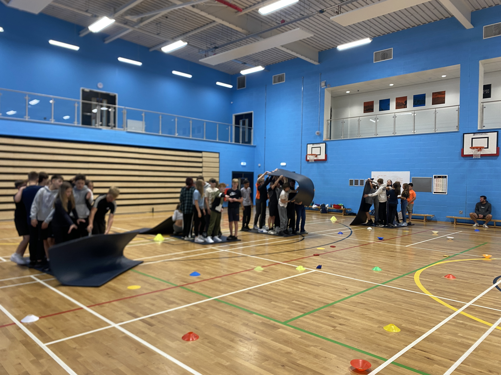
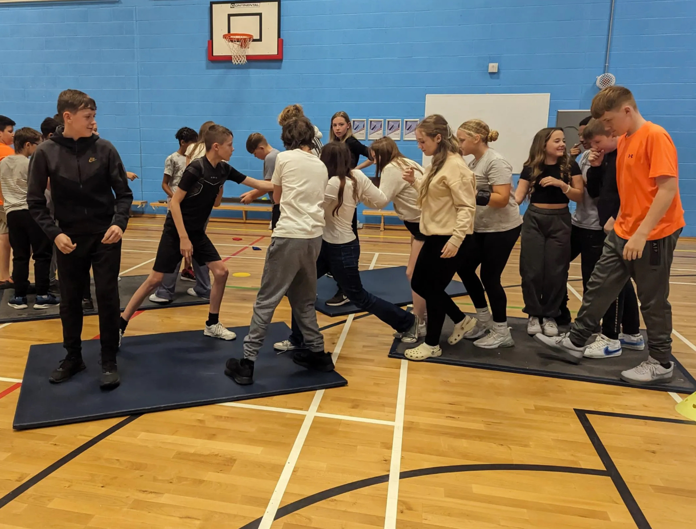

A food bank is a non-profit, charitable organisation that distributes food to those who have difficulty purchasing enough to avoid hunger, usually through intermediaries like food pantries and soup kitchens. Some food banks distribute food directly with their food pantries.People often contribute to food banks by dropping off non-perishable food items at designated collection points. Many food banks run regular food drives in partnership with local communities, schools, and organisations to encourage these donations.As a school people from xp east or xp we are bringing in donations to contribute to thorne and moorend food bank.The number of people supported by food banks varies widely depending on the size and capacity of the food bank, the region it serves, and the level of need in that area. Food banks can range from small, local operations serving a few hundred individuals to large, regional or national organisations that support thousands or even millions of people. A way that this links to the guiding question is that sometimes it is hard to climb the mountain and need help to get there. Everyone needs support at some point, and giving that support and compassion can go a long way in helping people. Some of the food needed atfood banks are tomatoes, meat, cereals, soups, biscuits and pasta.
Contribution: Danyl Asquith
Contribution: Theo Brown
 Contribution: Sophie Jones
This week in crew we participated in some team building activities. The floor is lava, mat and other team building games were included in this session. These activities help us as a crew and enable us to have a good crew bonding experience and we had a good chance of winning activities by working together. There was an element of competition in these activities and these helped us on our road to success. Team building is the foundation upon which great achievements are built. Just as individual stones alone cannot create a sturdy structure, a cohesive team is essential to reach the summit of success. When each member contributes their unique skills and perspectives, united by a common goal, the journey becomes not only smoother but also more rewarding. Through collaboration, trust is nurtured, communication flourishes, and challenges are conquered together. The path to the mountaintop might be steep, but with a strong team standing shoulder to shoulder, there is no peak too high to conquer, no obstacle too dauntina to overcome. As weascend together, supporting one another through every ascent and descent, we'll not only reach the summit but also forge unbreakable bonds and create a legacy of achievement that stands as a testament to the power of teamwork Although we aren’t all the way at the top of the mountain yet, we are striving to get better every day and be the best version of ourselves.
Contribution: Rihanna Williamson
On Tuesday we came together as a crew to overcome hard tasks and some completed them. With crew arden winning it all.
At the end of the week all the scores will be added up to see who won! After every group put in lots of effort with lifting mats and helping a person with a blindfold on to get across the sports hall without seeing the mats and us helping them.
Contribution: Zac Shepherd, Danny Dawson
Contribution: Alycia Rowland, Adam Rees, Lenia Muradi